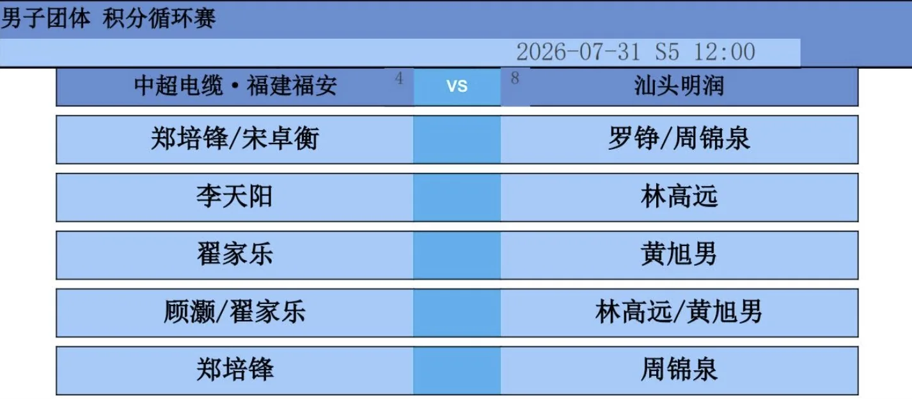
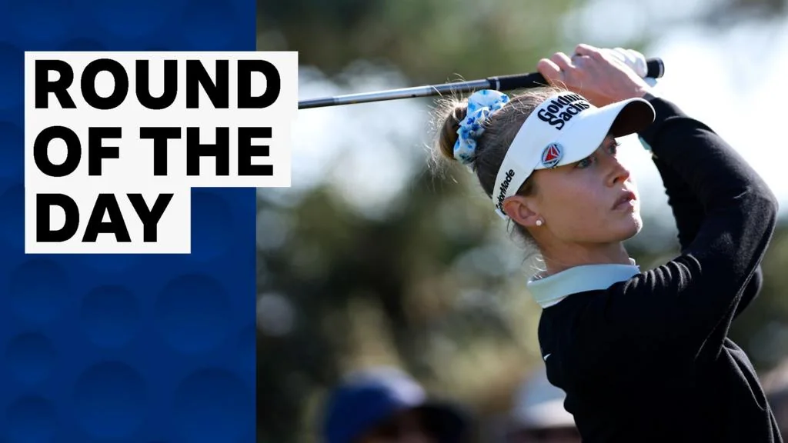
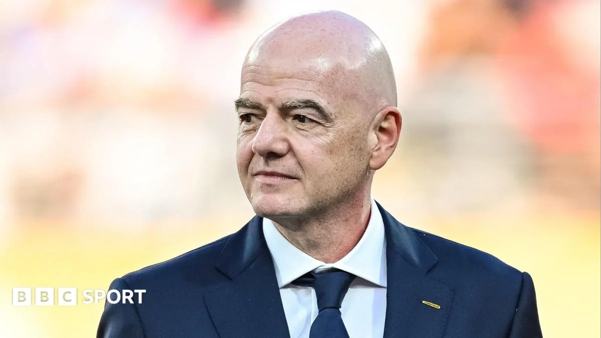

01
亚运礼服“星耀”发布：穿在身上的文化自信
中国体育代表团为爱知·名古屋亚运会准备的礼服正式亮相，设计背后是传统与现代的融合。
今天上午，中国体育代表团在爱知·名古屋亚运会的礼服“星耀”正式发布。从名字就能感受到，这套礼服想传递的是一种闪耀、自信的气质。虽然目前公开的细节有限，但从以往的经验看，中国代表团在大型赛事上的礼服设计，往往会融入传统文化元素，比如祥云、龙纹、中国红等，同时兼顾运动员的穿着舒适度和运动功能。这次“星耀”的设计，预计也会在面料科技和剪裁上下功夫，让运动员在开幕式上既精神又自在。
礼服的设计往往是一个国家文化自信的体现。回顾历史，中国代表团在奥运会、亚运会等大型赛事上的礼服，从早期的“番茄炒蛋”到后来的“青花瓷”“龙服”，每一次亮相都引发广泛关注。这些设计不仅是为了好看，更是向世界展示中国文化的一个窗口。这次“星耀”礼服，从命名到设计，都透露出一种年轻、闪耀的气质，可能更符合当代审美。
对于运动员来说，礼服不仅要美观，更要实用。开幕式往往持续几个小时，运动员需要长时间站立、行走，甚至可能遇到天气变化。因此，面料的选择至关重要。现代运动礼服通常会采用吸湿排汗、弹性好的功能性面料，确保运动员在穿着时保持舒适。此外，剪裁也会考虑到运动员的体型特点，既展现身材，又不妨碍活动。
对普通人来说，选运动装备也可以借鉴这种思路：既要好看，更要舒服。专业运动服的设计，往往在吸湿排汗、弹力伸展上有讲究，日常健身不妨多关注这些功能指标，而不是只看颜值。比如，跑步时选择速干面料的T恤，瑜伽时选择高弹力的裤子，这些都能提升运动体验。下次买运动装备时，不妨多看看标签上的功能说明，而不是被外观迷惑。
伊恩的观察
对普通人来说，选运动装备也可以借鉴这种思路：既要好看，更要舒服。专业运动服的设计，往往在吸湿排汗、弹力伸展上有讲究，日常健身不妨多关注这些功能指标，而不是只看颜值。
02
乒超雄安站对阵出炉：中超电缆迎战汕头明润
2026赛季乒超联赛雄安站男团对阵揭晓，强强对话一触即发。

乒超联赛雄安站的男团对阵今天出炉，中超电缆将对阵汕头明润。乒超联赛是国内乒乓球最高水平的职业赛事，各俱乐部汇聚了国手和世界高手，每一场对决都充满悬念。雄安站作为本赛季的一站，自然吸引了众多球迷的目光。对阵双方的实力如何，关键球员的状态怎样，都是赛前大家关注的焦点。
乒乓球比赛的胜负，往往在发球、接发球和前三板的细节中决定，一个环节的失误就可能改变整场比赛的走向。中超电缆和汕头明润都是乒超的传统强队，两队中都有多名国家队选手。中超电缆以年轻球员为主，冲击力强；汕头明润则经验丰富，战术多变。这场对决，很可能是一场速度与旋转的较量，也是年轻与经验的碰撞。
乒超联赛的赛制是团体赛，包括单打和双打。排兵布阵非常关键，教练需要根据对手的特点安排出场顺序。比如，如果对方有一名实力超强的选手，可能会用“田忌赛马”的策略，让己方较弱选手去碰对方强手，而集中优势兵力拿下其他场次。这种策略博弈，让比赛更加精彩。
对于普通乒乓球爱好者来说，看乒超不仅是欣赏高水平的对决，更是学习的机会。业余爱好者打比赛，也可以学学专业选手在关键分上的处理方式，比如发球抢攻、控制落点，这些细节能让你在球场上更有竞争力。此外，双打比赛中的配合也值得借鉴，如何与搭档沟通、如何跑位，都是业余比赛中常见的难题。
伊恩的观察
看乒超，不妨多留意球员的接发球技术和战术变化，这对提升你自己的乒乓球水平很有帮助。业余爱好者打比赛，也可以学学专业选手在关键分上的处理方式，比如发球抢攻、控制落点，这些细节能让你在球场上更有竞争力。
03
世界级名哨先执法中超？裁判资源调配的智慧与争议
明日之星冠军杯特邀的国际名哨，为何先去执法中超？中足联的这波操作引发讨论。
今天有报道讨论了一个有趣的现象：明日之星冠军杯特邀的世界级名哨，先被安排去执法中超比赛。这看起来像是中足联在“薅”上海足协的“羊毛”，但背后其实是裁判资源的高效调配。国际名哨来华，时间有限，先执法中超这种高关注度的比赛，既能提升联赛执法水平，也能让本土裁判近距离学习。而明日之星冠军杯作为青少年赛事，虽然也需要高水平裁判，但优先级可能稍低。这种安排，体现了赛事运营中对资源合理利用的考量。
裁判是足球比赛中不可或缺的一部分，他们的判罚直接影响比赛结果。国际级名哨通常拥有丰富的执法经验，能够更好地控制比赛节奏，处理突发情况。中超联赛作为中国足球的顶级赛事，每轮比赛都备受关注，裁判的每一个判罚都可能引发争议。因此，邀请国际名哨来执法，有助于提高中超的执法公信力。
然而，这种安排也引发了一些争议。有人认为，明日之星冠军杯是青少年赛事，更需要高水平裁判来保证公平，因为年轻球员的成长环境至关重要。如果名哨都去执法中超，青少年比赛的质量可能受到影响。这种观点也有道理，但赛事运营方需要权衡各方利益，做出最优决策。
这个案例告诉我们，资源有限时，如何分配是一门学问。对普通人来说，无论是健身时间还是运动装备，都可以借鉴这种“优先级”思维：把最好的资源用在最关键的场合，才能发挥最大效益。比如，如果你每天只有一小时锻炼时间，就应该优先安排最需要提升的项目，而不是平均分配。同样，购买运动装备时，也可以把钱花在最重要的鞋子上，而不是买一堆花哨但无用的配件。
伊恩的观察
这个案例告诉我们，资源有限时，如何分配是一门学问。对普通人来说，无论是健身时间还是运动装备，都可以借鉴这种“优先级”思维：把最好的资源用在最关键的场合，才能发挥最大效益。
04
科达大满贯次轮反弹：从低谷到“特别”的逆转
女子高尔夫大满贯赛事中，内莉·科达在首轮低迷后，第二轮打出“特别”表现，强势反弹。

在女子高尔夫大满贯赛事中，世界顶尖球员内莉·科达上演了一场精彩的逆转。首轮她表现不佳，但第二轮她打出了“特别”的一轮，成功从低谷中恢复。高尔夫是一项心理和技巧并重的运动，首轮的失误往往会影响球员的心态。科达的反弹，一方面得益于她扎实的基本功，另一方面也离不开强大的心理调节能力。她在第二轮中可能调整了策略，比如更稳健的开球、更精准的铁杆，以及关键的推杆表现，这些细节共同促成了她的复苏。
高尔夫是一项极其考验心理素质的运动。一轮比赛要打18洞，持续四五个小时，期间球员需要保持高度专注。首轮表现不佳，很容易让球员产生自我怀疑，进而影响后续发挥。科达作为世界排名前列的球员，经历过无数大赛，她知道如何从低谷中走出来。她可能会在赛后和教练沟通，调整挥杆动作，或者改变比赛策略，比如在开球时选择更安全的落点，避免冒险。
科达的逆转对普通人很有启发：运动中的低谷并不可怕，关键是如何调整心态和策略。如果你在健身或某项运动中遇到瓶颈，不妨像科达一样，放慢节奏，专注于基础动作，或者改变一下训练计划，也许就能迎来突破。比如，跑步遇到平台期，可以尝试间歇跑；举重遇到瓶颈，可以调整动作细节。重要的是，不要因为一时的失败而放弃，而是把它当作成长的机会。
伊恩的观察
科达的逆转对普通人很有启发：运动中的低谷并不可怕，关键是如何调整心态和策略。如果你在健身或某项运动中遇到瓶颈，不妨像科达一样，放慢节奏，专注于基础动作，或者改变一下训练计划，也许就能迎来突破。
05
国际足联叫停世界杯投资计划：200亿美元方案为何搁浅
国际足联宣布放弃一项争议性的世界杯私人投资计划，该计划曾引发广泛反对。

国际足联今天宣布，放弃一项由主席因凡蒂诺提出的世界杯私人投资计划。这项计划涉及金额高达约200亿美元，原本旨在为世界杯赛事筹集资金，但因多方反对而被迫取消。反对者担心，私人资本介入可能会影响世界杯的独立性和公平性，甚至让赛事沦为商业工具。国际足联在压力下选择让步，说明在体育治理中，透明和公信力至关重要。这一决定也反映了国际体育组织在商业化与公共利益之间寻求平衡的艰难。
世界杯是全球最具影响力的体育赛事之一，其商业价值巨大。国际足联作为管理机构，需要筹集资金来举办赛事，同时也要维护赛事的公正性。私人投资计划本意是引入更多资金，但可能带来利益冲突。比如，投资者可能要求影响赛事决策，或者利用世界杯进行商业推广，这都可能损害赛事的纯粹性。因此，反对声浪高涨，最终迫使国际足联放弃。
这件事看似离普通人很远，但背后是体育商业化的边界问题。对普通运动爱好者来说，这意味着要警惕过度商业化的赛事和产品，选择那些真正以运动员和球迷为中心的活动。同时，也提醒我们，任何决策都需要考虑多方利益，不能只看眼前的经济回报。比如，你参加一场商业跑步比赛，如果主办方只注重盈利，而忽视了参赛者的体验和安全，那么这样的比赛就不值得参加。选择那些口碑好、注重参与者体验的赛事，才能获得更好的运动体验。
伊恩的观察
这件事看似离普通人很远，但背后是体育商业化的边界问题。对普通运动爱好者来说，这意味着要警惕过度商业化的赛事和产品，选择那些真正以运动员和球迷为中心的活动。同时，也提醒我们，任何决策都需要考虑多方利益，不能只看眼前的经济回报。
无障碍文字记录
伊恩 你好，欢迎收听「伊恩每日·运动」。今天是2026年8月1日。先看一眼今天的大新闻：爱知·名古屋亚运会中国代表团的礼服发布了，叫「星耀礼服」；乒超雄安站的男团对阵也出炉了，中超电缆对汕头明润；中足联那边，明日之星冠军杯特邀的世界级名哨，先跑去执法中超了，这事儿挺有意思。国外方面，FIFA放弃了因凡蒂诺提出的私人投资计划，高尔夫名将内莉·科尔达在女子公开赛第二轮打出了「特别」的表现。这几件事看起来没什么关联，但把它们放在一起，你会发现一个共同的主题：在压力面前，如何找回自己的节奏。无论是运动员、代表团，还是国际组织，都在面对这个课题。
伊恩 今天早上，中国体育代表团发布了明年爱知·名古屋亚运会的礼服，名字叫「星耀礼服」。消息很短，官方只给了名字和几张图，具体设计细节还没完全公开。但你知道吗，礼服这件事，从来不只是好看那么简单。
先说说「星耀」这个名字。星，是星光，耀，是荣耀。听起来就带着一种「我要在聚光灯下闪耀」的劲儿。这类发布会通常有个套路：先放设计图，然后网友开始讨论「有没有中国元素」「颜色正不正」。但这次信息有限，我们还没看到实物细节，所以先不急着评价美丑。
我想说的是，礼服对运动员意味着什么。你想想，运动员平时训练穿什么？速干衣、运动鞋、汗湿的T恤。但开幕式那天，他们穿上量身定制的礼服，走进能容纳几万人的体育场，灯光打下来，全场欢呼。那一刻，衣服就不再是衣服了，它是一种身份的确认——「我是代表中国来的」。
心理学上有个概念叫「穿衣认知」，你穿什么，会影响你怎么想自己。运动员穿上礼服，会不自觉地挺直腰板，眼神更坚定。这不是玄学，是真实的心理暗示。所以，发布礼服，其实是在给运动员注入心理能量，让他们在赛前就进入「战斗状态」。
当然，礼服也承载着公众的期待。我们普通人看开幕式，除了看运动员入场，还会盯着礼服看。它像一张名片，向世界展示我们的审美和文化。所以，每一次礼服发布，都是一次集体情绪的投射。好看，我们骄傲；不好看，我们吐槽。但无论如何，当运动员穿上它，我们都会为他们加油。
说到普通人，你可能觉得礼服离自己很远。但其实，我们每个人都有自己的「礼服时刻」——面试穿的正装、婚礼上的礼服、毕业典礼的学士服。那些衣服让你瞬间进入角色，提醒你「这一刻很重要」。所以，下次你穿上正式衣服时，不妨也给自己一点心理暗示：我可以做得更好。
回到「星耀礼服」，虽然细节还没公布，但我相信设计师一定花了不少心思。等更多信息出来，我们再细聊。现在，先期待明年亚运会，期待中国运动员穿着这身礼服，在名古屋的夜空下，闪耀出属于他们的星光。
好了，今天先聊到这儿。我是伊恩，咱们明天见。
伊恩 乒超雄安站的男团对阵刚刚出炉，中超电缆和汕头明润这两支老牌强队，将在这一站正面碰一碰。消息来自手机新浪网，发布于今天早上。对阵表出来了，但具体的排兵布阵、谁打一单谁打二单，还得等赛前官方确认。
先说说这两支队。中超电缆和汕头明润，在乒超里都是有名有姓的劲旅。中超电缆，听名字就知道有企业背景，这些年投入不小，队里既有经验丰富的老将压阵，也有冲击力强的年轻选手。汕头明润呢，同样不差，俱乐部运营成熟，球员配置也很有深度。两队碰面，从来都不缺火药味。
乒超的赛制是团体对抗，五盘三胜，其中有一盘是双打。这种赛制下，排兵布阵特别讲究。你可能会问，为什么排阵这么关键？因为乒乓球不像篮球足球，场上就一个人，你这边派谁，对面怎么应对，直接决定比赛走向。比如，你如果让队里最稳的选手去打对方最难缠的，那可能就浪费了；反过来，你要是田忌赛马，用下等马兑掉对方的上等马，那剩下的盘就有机会。所以教练的脑子，在赛前就已经开始转了。
雄安站是本赛季乒超的重要一站。为什么重要？因为乒超联赛是积分制，每一站的胜负都关系到最终的排名和季后赛资格。雄安站虽然不是总决赛，但每一分都算数，各队都憋着劲要拿分。中超电缆和汕头明润，现在积分形势如何，我没查到具体数字，但可以确定的是，这一场谁都输不起，尤其是强强对话，赢一场可能就改变整个赛季的走势。
说到球员状态，这是比赛最大的变数。乒乓球运动员的状态起伏很快，可能上一站还势不可挡，这一站就手感冰凉。而且，雄安站是连续作战，体能和专注度都是考验。谁能更快进入状态，谁能在关键分上咬住，谁就能占据主动。
关键分，这是乒乓球最刺激的地方。10平、11平，一分定胜负，那种紧张感，隔着屏幕都能感受到。这时候，技术反而不是最重要的，心理素质才是。老将的优势就在这，见过大场面，知道怎么处理这种压力。年轻选手呢，冲劲足，但容易急，就看能不能稳住。
这场比赛，对普通乒乓球爱好者来说，也是个学习的机会。你看职业选手怎么处理关键分，怎么调整节奏，怎么变化发球，这些都能用到你自己的球局里。比如，你平时打球，领先的时候容易松，落后的时候容易慌，那你就看看职业选手是怎么保持专注的。还有，发球的变化，职业选手的发球，不只是把球发过去，而是有旋转、落点、节奏的组合，你哪怕学个一招半式，也能让你的球友头疼。
当然，我们看比赛，不只是看输赢，更是看人的表现。谁能在逆境中站出来，谁能在胶着时打破僵局，这些瞬间，才是体育最动人的地方。中超电缆和汕头明润，谁会更胜一筹？现在说还太早，但可以肯定的是，这场对决，值得期待。
后续的看点，除了这场比赛本身，还有两队在整个雄安站的表现。乒超联赛是漫长的赛季，一站打好了，不代表后面就顺了。所以，这场比赛，既是实力的检验，也是心态的试金石。
最后，给普通人的建议：如果你也打乒乓球，不妨在比赛日约上球友，边看边聊，学学职业选手的战术思路。或者，你干脆去球馆打一场，感受一下那种对抗的乐趣。体育的魅力，不就在这吗？好了，今天的乒超前瞻就到这，我们比赛见。
听众 伊恩，乒超的赛制是怎样的？为什么叫「乒超」？
伊恩 好问题。乒超全称是「中国乒乓球俱乐部超级联赛」，始于1999年，是国内最高水平的乒乓球职业联赛。赛制通常采用五场三胜制，包括单打和双打。每支俱乐部可以聘请国内外高水平选手，所以竞争非常激烈。乒超不仅是国内球员的练兵场，也是外援展示实力的舞台。对于普通爱好者来说，看乒超可以学到很多战术细节，比如发球变化、接发球抢攻、相持中的落点控制。
伊恩 今天，国际足联宣布放弃了一项备受争议的私人投资计划。这个计划由主席因凡蒂诺提出，原本打算募集200亿美元，用于世界杯相关项目。但消息一出，就遭到了广泛的反对。反对者担心，私人资本介入会损害足球的公平性和独立性。最终，因凡蒂诺选择撤回计划，这被看作是一次重大让步。
咱们先捋一捋，这200亿美元是个什么概念？它比很多国家的年度体育预算还要多。这笔钱原本打算怎么用？据公开报道，是用于扩大世界杯规模、增加参赛队伍、改善基础设施等等。听起来挺美好，但问题出在钱从哪来。私人投资者不是慈善家，他们投钱是要回报的。回报从哪来？很可能是从转播权、赞助商、甚至门票价格里来。这样一来，世界杯的商业味儿会更浓，而足球的纯粹性就可能被稀释。
反对的声音主要来自欧洲足球俱乐部联盟和一些国家的足协。他们担心，一旦私人资本深度介入，国际足联的决策就会受制于资本，而不是足球本身。比如，为了讨好投资者，可能会把世界杯办成更频繁、更商业化的赛事，甚至改变比赛规则，让比赛更刺激、更吸金，但可能牺牲公平性。这就像你请了个金主爸爸，以后吃饭就得看人家脸色。
因凡蒂诺撤回计划，说明他听到了反对的声音。但问题来了：世界杯的办赛资金从哪来？国际足联的商业模式会不会调整？这不仅是管理层的难题，也关系到咱们球迷。你想，如果世界杯变成一场纯粹的商业秀，门票贵得离谱，转播还要额外付费，那看球的乐趣是不是就打折了？
咱们普通人能做什么？其实，关注和讨论就是第一步。足球是世界的运动，它的未来不该只由少数人决定。咱们球迷的声音，也是一种力量。就像这次反对声浪，让计划撤回。所以，下次再有什么大计划，咱们多留个心眼，多聊聊，也许就能让足球保持它该有的样子。
好了，今天先聊到这。我是伊恩，咱们明天见。
伊恩 先看事实：2026年8月1日，女子公开赛第二轮，内莉·科尔达打出了“特别”的一轮，成功摆脱了第一轮的困境。BBC用“special”来形容她的表现。第一轮她发挥不佳，一度让人担心能否晋级，但第二轮她调整了状态，打出了精彩的一轮。
咱们拆解一下，为什么第一轮会“糟”，第二轮又能“特别”？高尔夫是心理要求极高的运动，一轮失误可能毁掉整个比赛，但科尔达展示了顶级球员的调整能力。她的秘诀是什么？往往是专注于当下，不去想结果。
具体来说，第一轮可能输在“想太多”——总想着要领先、要抓鸟，结果动作变形。第二轮她可能只是把每一杆当成独立任务，不去想总成绩，反而打出了流畅的节奏。这种“过程导向”而非“结果导向”的心态，是很多业余球友容易忽略的。
对普通人来说，这有什么启发？比如你打羽毛球、跑步，或者任何竞技项目，如果总盯着比分或配速，容易紧张、动作僵硬。试着把注意力放在每一次呼吸、每一步落地、每一次挥拍上，反而能发挥更好。
再说代价：第一轮的失误可能让她多花了不少精力去追，但顶级球员的调整能力就在于能快速翻篇。这也提醒我们，失误不可怕，可怕的是让失误影响后面的表现。
后续看点：她能否保持这种状态，在接下来的轮次中继续冲冠？我们拭目以待。
最后，给大众的建议：下次运动时，试着把目标从“我要赢”换成“我做好每一个动作”，你会发现，结果往往不差。
听众 伊恩，我平时打高尔夫总是一号木开球就紧张，怎么调整？
伊恩 这个问题很典型。一号木开球紧张，通常是因为你太在意距离和方向。科尔达的调整方法可以借鉴：把注意力放在呼吸和动作节奏上，而不是结果。你可以试试在挥杆前做一次深呼吸，然后想一个关键词，比如「流畅」。另外，练习时模拟比赛压力，比如设定目标，如果没达到就做俯卧撑。这样能帮你适应压力。记住，高尔夫是打给自己看的，放松才能发挥。
伊恩 今天咱们聊一个足球圈里挺有意思的事儿。中足联被质疑“薅上海足协羊毛”——原本为“明日之星冠军杯”青少年赛事特邀的世界级名哨，先去执法了中超。这听起来有点绕，但其实就是说，为青少年比赛请来的高水平裁判，被临时调去吹中超了。
先摆事实：这条新闻来自上海观察者网，说的是中足联把上海足协为“明日之星冠军杯”特邀的国际级裁判，先安排去吹中超比赛。具体是哪位裁判、吹了哪场，新闻里没细说，但“世界级名哨”这个说法，说明裁判水平很高。
那为什么会有这种调配？说白了，就是顶级裁判太稀缺。中超、足协杯、青少年赛事，还有各种国际比赛，都需要高水平裁判。但顶尖裁判就那么几个，赛事一多，难免要互相借调。中足联作为管理机构，可能觉得中超更需要名哨压阵，毕竟关注度高、对抗激烈。
但这事儿引发了一个思考：青少年赛事的执法质量，会不会因此打折扣？你想，年轻球员正处于涨球的关键期，比赛公平公正特别重要。如果裁判水平不够，漏判、误判多了，不仅影响比赛结果，还可能打击小球员的积极性。而且，青少年比赛本来就是培养裁判的试验田，让年轻裁判多吹高水平比赛，对他们成长也有好处。
再说说裁判资源紧张这事儿。其实不只是中国，全球都面临这个问题。裁判工作压力大、报酬不高，还经常挨骂，愿意干的人越来越少。所以，如何合理调配有限的裁判资源，就成了一个管理难题。中足联这么做，可能是出于无奈，但至少应该透明化，别让俱乐部和球迷觉得有猫腻。
对咱们普通人来说，这事儿有啥启示？第一，看球的时候，对裁判多点理解，他们也是人，也会犯错。第二，如果你身边有孩子踢球，可以鼓励他们尊重裁判，从小养成好习惯。第三，如果你自己也想当裁判，现在其实是个机会，因为缺人嘛。
最后，希望中足联能平衡好各方需求，既保证中超的执法质量，也别亏待了青少年赛事。毕竟，中国足球的未来，在那些年轻球员身上。好了，今天就说这么多，咱们明天见。
听众 伊恩，裁判资源紧张，对我们业余爱好者有什么影响？
伊恩 影响其实不小。业余比赛虽然水平不高，但同样需要公正的执法。如果专业裁判不够，可能会让一些业余赛事由非专业人士执法，导致误判增多。这会影响比赛体验，甚至可能引发冲突。所以，如果你参加业余比赛，可以主动学习一些基本规则，理解裁判的判罚，这样能减少误解。另外，如果你有兴趣，也可以考个裁判证，为社区赛事做贡献。裁判是比赛的守护者，缺了他们，比赛就乱了。
伊恩 我们来复盘一下今天的几条新闻。礼服发布，是给运动员一个仪式感；乒超对阵，是给球迷一个期待；FIFA放弃投资计划，是给足球一个底线；科尔达的逆袭，是给所有人一个示范；裁判调配，是给赛事一个提醒。它们共同说明：无论外界如何变化，回归本质才是王道。运动员穿上礼服，记住自己代表谁；球队面对强敌，记住自己为什么打；组织面对反对，记住自己为谁服务；球员面对失误，记住自己热爱什么。这就是「找回节奏」的真谛。
伊恩 今天的节目就到这里。明天，亚运会备战进入新阶段，乒超雄安站也将开打，FIFA的后续动作值得关注。对于你，无论今天遇到什么压力，试着像科尔达那样，深呼吸，专注于当下。感谢收听，我们明天见。